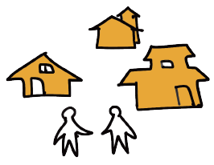
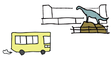
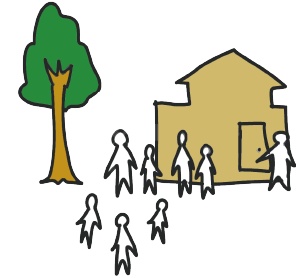
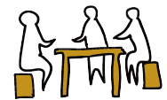

福井県福井市にある越前海岸沿いの町、国見地区。
海と山に囲まれたこの小さな町は、過疎・少子化が進む地域ではありますが、
近年は自然豊かな環境に魅力を感じ、少しずつ移り住む方も増えてきました。
「空き家はありますか？」
「いくらくらいで買えますか？」
「コンビニやスーパーは近いですか？」
「学校はどんな感じですか？」
「舟って持てるんですか？」
そんな素朴な疑問にお答えするのが、この相談室です。
“空き家” をきっかけに、人と人がゆるやかにつながる場をつくれたら。
そんな思いから、空き家マッチングツアーを始めました。
空き家は、地域との関係の中にあります。だからまずは、町を歩き、
海を見て、人と話して、私たちの暮らしの匂いを感じてもらうこと。
そこから始めたいと考えています。
海辺の暮らしに興味のある方は、ぜひお気軽にお問い合わせください。
空き家マッチングまでの流れ
準備

空き家の掘り起こし
地域の皆さんの協力で空き家を探します。
家の状態や家主さんの意思の確認をします。
参加者募集
SNSで発信したり、チラシを作ってお知らせします。
空き家マッチングツアー

集合
福井駅に集合。バスで移動します。

みんなで空き家を見学
おうちの中を見せていただいたり、地域のルールを説明してもらいます。
ランチは地元の海辺のカフェで、地元のメンバーと一緒に食べます。
後日

気になる物件があれば個別にお話。
所有者、希望者、不動産屋を交えて話し合いをします。
マッチング!!
よくある質問
- Q1. まだ移住を決めていなくても参加できますか？
- A1. はい、もちろんです。ツアーを通じて、国見地区での暮らしや空き家の状況を知ることができますので、ぜひお気軽にご参加ください。
- Q2. 子ども連れや家族での参加は可能ですか？
- A2. はい、もちろん可能です。お子様連れ・ご家族での参加を私たちは歓迎します。後日、国見地区内の保育園や学校の見学についてもご案内は可能ですので、別途お問い合わせください。
- Q3. ツアーではどんなことをしますか？
- A3. 国見地区の空き家を6～7軒程度見学し、生活・文化・行事について住民からお話を聞きます。海産物の採取（漁業権）、各町内の祭り、自治会ルールについての説明があります。
- Q4. 空き家はどんな状態ですか？価格はどれくらいですか？
- A4. すぐに住める状態の物件から、ある程度リフォームが必要な状態の物件まで様々で、価格も様々です。ツアー当日は、物件の詳細や価格をお伝えすることができます。
- Q5. 国見地区はどこにありますか？最寄りの駅はどこですか？
- A5. 国見地区は福井市の海沿い（西海岸）に所在します。最寄り駅は福井駅で、車で45分位の距離です。本数は少ないですが、福井駅からの路線バスもあります。
- Q6. 生活に自家用車は必要ですか？
- A6. はい、路線バスの便は限られていますので、生活に自家用車は必要です。最寄りのコンビニやドラッグストアまでは車で約10分、スーパーや病院は30分圏内に数件あります。
- Q7. 冬の暮らしや雪の状況はどんな感じですか？
- A7. 福井市の市街地は積雪がありますが、海岸線では雪が積もることは少ないです。これは日本海の暖流である対馬海流の影響であると言われています。一方、潮風で金属は錆びやすいため、洗車など車のお手入れは重要になります。
- Q8. 地域行事や人付き合いはありますか？
- A8. はい、それが醍醐味であるとご理解いただけますと幸いです。特に集落ごとにある年に一度の大祭は、神輿（みこし）や神楽（かぐら）などを通じて住民同士の交流が深まります。移住していただいた場合は、行事を通じて、少しずつ地域との関係が生まれていきます。
- Q9. リモートワークや二拠点生活はできますか？
- A9. はい、可能です。国見地区ではインターネットの光回線が2025年に開通し、ご利用頂けます（ただし現在も一部未開通で、その場合はケーブルテレビの回線をご利用頂けます）。地域行事やルールにご理解いただける方であれば、二拠点生活も可能です。
- Q10. 空き家を無人のゲストハウスとして活用することはできますか？
- A10. 基本的には「移住」を目的とする方のためのツアーですので、商用目的でのご参加はお断りさせていただいております。ご理解いただけますと幸いです。
- Q11. 「国見 海・人・暮らし相談室」はどのような組織ですか？
- A11. 国見 海・人・暮らし相談室は、国見地区での暮らしや移住に関心を持つ方と、地域をつなぐための相談窓口です。行政機関ではなく、自治会や公民館を中心に有志メンバーで活動しています。空き家だけではなく、地域との関係や暮らしの雰囲気も含めて知っていただける場を目指しています。